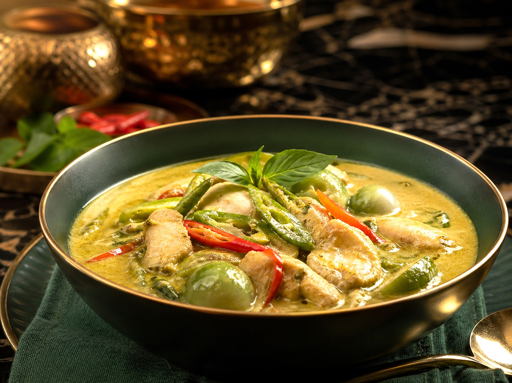

Chicken curry
Home

Description
A scrumptuous, Thai inspired chicken curry to warm your belly and your soul.
Ingredients
- 400g chicken thigh, diced in chunks
- 1 courgette
- 1 bell pepper
- 1 carrot
- 1 can coconut cream/milk
- 2 tbsp red curry paste
- 1 tbsp soy sauce
- 1 tbsp fish sauce
- 3 pieces black cardamon
- 1 piece star anisseed
- 2 tbsp chopped coriander
Steps
- Pour half can of coconut milk into pot, heat on medium until big bubbles appear uniformly
- Add the curry paste, mix in well
- Add the chicken thigs, fish sauce, soy sauce, black cardamon and anisseed, cook until white from the outside
- Add the vegetables and remaining coconut cream, cook until carrots are soft, but not squishy
- Taste and adjust spices accordingly, serve with white rice or bread, garnishing with coriander
Notes
You can of course add MSG. MSG makes everything better.
If the curry becomes too dry, can add some water, making sure not to water down too much.